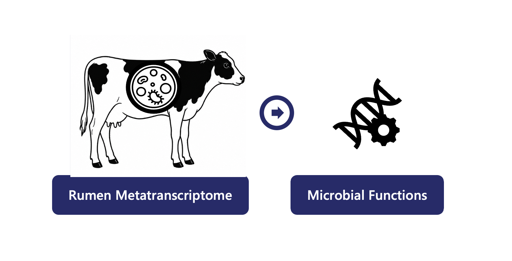

Genomics & Bioinformatics
Functional profiling of rumen microbial ecosystems using large-scale metatranscriptomic sequencing and pathway analysis to study dietary crude protein, feed efficiency, and lactation performance.

The rumen microbiome plays a central role in feed digestion, nutrient utilization, microbial fermentation, and dairy cow productivity. While microbial community composition has been widely studied, less is known about how microbial gene expression responds to nutritional interventions.
This project uses shotgun metatranscriptomic sequencing to investigate how dietary crude protein levels influence rumen microbial activity, metabolic pathways, feed efficiency, and lactation performance in Holstein dairy cows.
Lactating Holstein cows were assigned to dietary crude protein treatments. Rumen samples were collected for metatranscriptomic sequencing and integrated with production and feed efficiency measurements.
Crude protein treatments
Shotgun metatranscriptome sequencing
Lactation performance traits
Feed efficiency evaluation
Sequencing data were processed through a functional genomics workflow to characterize expressed microbial genes and pathways in the rumen ecosystem.
Gene expression profiles were analyzed to identify microbial functions and metabolic pathways associated with dietary treatment, feed utilization, and production traits.
This project combines animal nutrition, microbiology, and functional genomics to characterize how dietary protein influences rumen microbial ecosystems at the transcriptional level. The work contributes to understanding biological mechanisms underlying feed utilization, lactation performance, and rumen microbial ecological dynamics.
Liao, M., Ramirez, A. M., Duncan, J., Alward, K., Owens, C., Campos, L. M., Hanigan, M. D., & Cockrum, R.
Effect of Dietary Crude Protein on Lactation, Feed Efficiency, and Rumen Microbial Ecological Dynamics in Holstein Cows: A Shotgun Metatranscriptome Analysis.